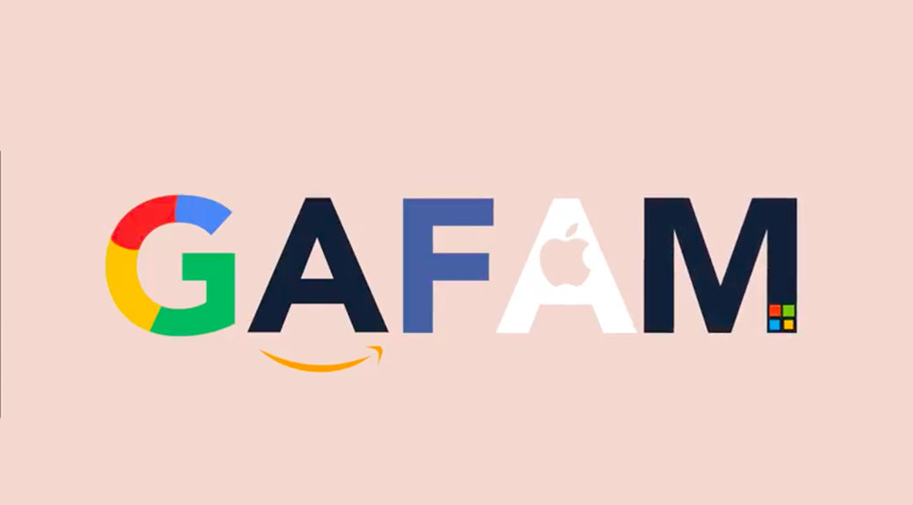

¿A que quiero dedicarme?
Ciberseguridad
Quiero dedicarme a varios trabajos, pero uno de ellos es la ciberseguridad la cual actualmente es muy importante en nuestras vidas actuales, donde el uso de la tecnologia la usamos a diario, puede que nada mas descarguemos un archivo inofencivo, pero de ese archivo puede traer varios problemas, al igual hay veces que la contraseña de nuestras redes sociales son muy faciles y puede que hasta una persona sin conocimientos informaticos adivine tu clave y ponga en riesgo tu informacion personal.

Programacion en videojuegos
La programacion en videojuegos me a llamado la atencion desde que era pequeño, pues creo que la mayoria de las personas disfrutamos de nuestra infancia jugando algun videojuego, ya sean las maquinitas o algun juego mas moderno como puede ser el mario bros, esto me llamo la atencion, pues todos los juegos que hay en el mercado pasan por un proceso de programacion, donde hay varios integrantes, ya sea de animacion o directamente programando los movimientos de cada personaje y pues siempre me a gustado porogramar juegos simples, pero siempre hay que aprender mas y por eso quiero aprender a hacer un videojuegos aun mas complicados.

Trabajar en una empresas GAFAM
Como un reto muy grande es trabajar en una empresa GAFAM las cuales son las mas grandes empresas que existen actualmente, aparte de que pagan muy bien tienen soporte a nuevos empleados muy bueno, ya sea su lugar de descanso para cuando se estresen y quieran relajarse antes de seguir con el codigo. Antes de seguir se me olvio decir que es GAFAM, por sus iniciales es Google, Apple, Facebook, Amazon y Microsoft ahora si continuemos. Todo lo antes mencione lo hacen para que la salud mental de la persona este en buenas condiciones, al igual hay un lugar el cual te permiten comer, gym, spa, cine, sala de videojuegos, etcetera. Tiene muchos beneficios trabajar en una de esas empresas, pero al final de cuentas es muy dificil llegar y solo con esfuerzo propio y saber ingles podemos alcanzarlo, nada mas debemos de motivarnos nosotros mismos para poder alcanzar nuestras metas y poder cumplirlas.
